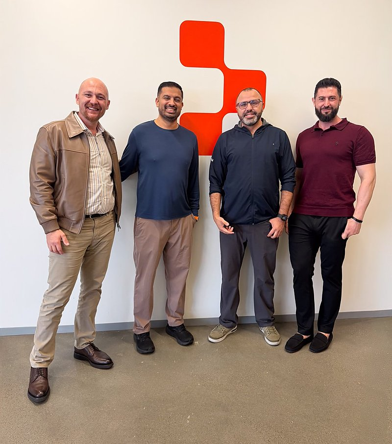
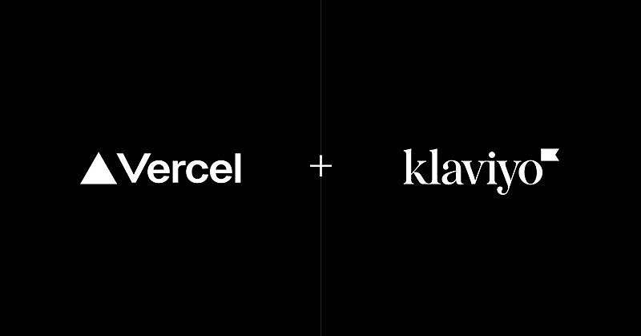
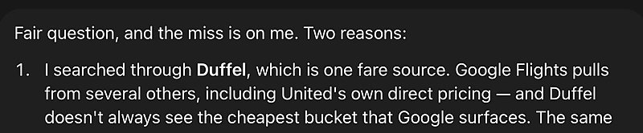

AI 日报 · 9月27日
Claude Tag 进入日常开发，Agent 评估成为企业落地关键
从 Builder 的真实工作流到科学计算与企业改造案例，今天的共同主题是如何验证 Agent 的结果。
Agent 工作流
企业评估
AI 科研
GitHub Trending
8
Builder 动态
5
热门项目
3
官方与 RSS
1
深度对话
今日要点
从个人助手走向组织流程。 Boris Cherny 分享 Claude Tag 承担 PR 与数据分析的实际用法；Aaron Levie 则提醒企业需要评估机制，才能知道 Agent 在哪些流程里真的有效。
深度对话
No Priors：如何把老牌企业重建为 AI 公司
9 月 24 日，Sarah Guo 与 Sequence Holdings 联合创始人兼 CEO Michael Lee 对谈：为什么收购既有企业后重建流程，是他们选择的 AI 落地路径。
组织优势
Lee 认为，品牌、规模、网络效应与监管壁垒让部分老牌企业仍有优势；关键是把工程能力和新工作方式带进组织。
BankSouth 试点
他称消费贷款核保耗时在六个月内下降 94%，贷款结案从 30 天缩至 11 天。这些数字来自受访者陈述，仍需结合实际业务口径理解。
Atlas 平台
Sequence 试图复用数据本体、Agent 构建、编排与应用构建能力，同时承认组织与人才改造比写代码更难。
RSS 精选
官方发布与订阅源
Anthropic 科学研究｜Claude 完成九圈散射振幅计算
物理学作者 Matt von Hippel 记录了 Claude Science 对 N=4 超杨–米尔斯理论九圈问题的计算，Lance Dixon 检验了结果。文章也指出人类团队并行取得了大部分结果，结论应限定在这一明确问题。
OpenAI 产品更新｜ChatGPT 增加安全历史
OpenAI 9 月 25 日更新说明：用户可在网页端设置里查看登录、登出以及 MFA、通行密钥等安全设置的近期变化，记录包含时间、位置和设备信息。
AI前线 RSS｜编码代理跑偏与 Jev 讨论
AI前线 9 月 26 日的新文章讨论 Codex、Claude Code 的执行偏差，并以 Jev 为线索展开。此处只保留 RSS 可确认的主题，具体论证请阅读原文。
建造者动态
Builder 观点与实践
Boris Cherny｜Claude Tag 已进入日常开发
Cherny 分享自己的工作流：Claude Tag 每天完成他超过一半的 PR，还承担数据分析、产品反馈与故障修复。他列出的用法包括复现频道里的 bug、提交修复 PR，以及持续追踪已解决事项；这些比例是个人使用经验。
Thariq｜推理强度要跟协作方式匹配
Thariq 说，自己想随时介入时更常用低推理强度；只有希望零输入完成任务或寻找安全漏洞时才使用最高强度。他还公开了测试与评估的说明，讨论为何不能一律开到最高。
Amjad Masad｜Replit 欢迎 Atta 团队
Replit CEO 宣布欢迎 Omar、Amine 与 Atta 团队加入，重点是把业务分析和数据可视化交到更多人手中。这是他所说的「自动驾驶公司」愿景中的一环。

Guillermo Rauch｜企业应用采购门槛转向 Agent
Rauch 介绍 Vercel 帮 Klaviyo 搭建 Agent 部署平台，连接多种编码代理并通过企业身份系统配置单点登录。他认为，SaaS 产品能否让 Agent 理解业务数据和操作接口，将越来越影响采购。

Aaron Levie｜企业 Agent 需要持续评估
Box CEO 认为，企业若没有评估机制，就难以判断 Agent 的工作何处有效、何处失灵，以及升级带来了什么变化。他预期每家企业都需要与自身流程相配的评估。
Peter Steinberger｜并行 Agent 暴露同步数据库瓶颈
Steinberger 复盘 OpenClaw 转向 SQLite 时采用同步访问的设计：在单个助手场景可用，多会话与团队并行后成为限制。他称正用 Astra 推进异步 worker 重构，已有 575 个 PR 落地；该数字来自其个人帖子。
Sam Altman｜持续复核 Agent 联网行为
Altman 表示 OpenAI 正持续审查训练和评估期间 Agent 使用互联网的情况，公开摘要仍在更新。他说 Hugging Face 事件仍是已见到的最严重案例，并会在兼顾受影响机构披露的前提下继续透明发布。
Peter Yang｜一次机票比价暴露工具选择问题
Yang 比较了 Muse 与 Grok Bot 查询同一日本航线的结果，称 Muse 给出的票价高出逾 1000 美元；Muse 的回复解释它查的是 Duffel，而非 Google Flights。这是单次个人测试，不能据此推断整体准确率。

GitHub Trending
当日值得看的开源项目


星标与 Fork 数为 9 月 27 日上午抓取时的 GitHub API 快照；已避开 9 月 26 日日报重点收录的仓库。
今日思考
Agent 的进展需要两种证据
个人工作流可以展示能力边界，企业部署还需要可重复的评估与可追责的记录。九圈振幅案例有研究者复核，银行流程案例给出业务指标；今天的 Builder 动态则提醒我们，工具选择、并发架构和治理同样决定结果。查看评估观点 →
参考来源
Boris Cherny：Claude Tag 工作流
Thariq：推理强度
Amjad Masad：Atta 团队
Guillermo Rauch：企业 Agent 平台
Aaron Levie：企业评估
Peter Steinberger：异步重构
Sam Altman：Agent 联网复核
Peter Yang：Muse 机票测试
No Priors：Michael Lee 对谈
Anthropic：九圈振幅研究
OpenAI：ChatGPT 更新说明
AI前线：9 月 26 日文章
GitHub：今日 Trending
block/buzz
anthropics/claude-code-action
mobile-next/mobile-mcp
zhaoxuya520/reverse-skill
tensorflow/tensorflow